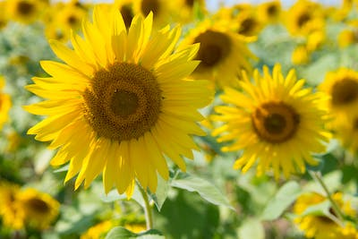

Home
Welcome to my website!
Search for Plants
Plants in LPU
-
Rose
Species: Rosa
Common Name: Rose
Scientific Name: Rosa sp.
Habitat: Cultivated gardens and parks
Other details: Roses are ornamental flowering plants that are widely cultivated for their beautiful and fragrant blooms. They belong to the Rosaceae family and are native to Asia, but have been cultivated around the world for thousands of years.
Roses are available in a wide variety of colors, including red, pink, white, yellow, orange, and purple, and can be either single or double blooms. They can be grown as shrubs, climbers, or ground covers, and have thorny stems to protect themselves from predators.
Roses are used in a variety of ways, including as cut flowers, in perfumes and other fragrances, and as a flavoring in foods and beverages. They are also used in traditional medicine for their anti-inflammatory and antioxidant properties.
In addition to their aesthetic and practical uses, roses have also been used symbolically for centuries. They are often associated with love, romance, and beauty, and are a popular gift for Valentine's Day and other special occasions. -
Oak
Species: Quercus
Common Name: Oak
Scientific Name: Quercus sp.
Habitat: Forests and woodlands
Other details: Oaks are a group of hardwood trees that belong to the beech family, Fagaceae. They are found throughout the world in temperate and subtropical climates, and there are over 600 species of oaks.
Oaks are generally large and long-lived trees that can reach heights of up to 100 feet or more. They have distinctive lobed leaves that are usually dark green in color, and produce acorns as their fruit.
Oaks are important ecologically as they provide habitat for a wide variety of animals, including insects, birds, and mammals. They also provide a source of food for many animals, as well as for humans who have traditionally used acorns as a food source.
Oaks are also important culturally, with many societies and religions associating them with strength, wisdom, and longevity. They have been used in many different ways by humans throughout history, including for building, fuel, and as a source of medicine.
Overall, oaks are a vital and diverse group of trees that play an important role in many different ecosystems and cultures around the world. -
Tulip
Species: Tulipa
Common Name: Tulip
Scientific Name: Tulipa sp.
Habitat: Cultivated gardens
Other details: Tulips are a group of bulbous flowering plants that are native to Central Asia and Turkey. They belong to the lily family, Liliaceae, and are widely cultivated for their showy, colorful flowers.
Tulips are available in a wide variety of colors, including red, pink, yellow, white, and purple, and can be either single or double blooms. They have long, narrow leaves that grow from the base of the plant, and produce flowers on tall stems.
Tulips are usually grown from bulbs, which are planted in the fall and bloom in the spring. They are a popular spring flower and are often used in floral arrangements and as cut flowers.
Tulips have been cultivated for thousands of years, and have played an important role in many different cultures and societies. They have been used as a symbol of love and passion, as well as for medicinal purposes. In the Netherlands, tulips have a long history and are a cultural icon, with the country being known for its tulip fields and festivals.
Overall, tulips are a beautiful and popular flower that have been appreciated for their beauty and cultural significance for centuries. -

Sunflower
Species: Helianthus
Common Name: Sunflower
Scientific Name: Helianthus annuus
Habitat: Cultivated fields and gardens
Other details: Sunflowers are a group of plants that belong to the Asteraceae family. They are native to the Americas, and are widely cultivated for their edible seeds, oil, and ornamental value.
Sunflowers are known for their large, bright yellow flower heads that can reach up to 1 foot in diameter. They have long, thick stems and broad, green leaves that are often heart-shaped.
Sunflowers are grown as annuals, and are typically planted in the spring and harvested in the fall. They are an important crop in many parts of the world, with the seeds being used for food, birdseed, and oil production.
Sunflowers are also popular as ornamental plants, and are often grown in gardens and used in floral arrangements. They have been bred to produce a wide variety of flower colors, including red, orange, and bronze.
Sunflowers are a symbol of happiness, loyalty, and longevity, and have been used in many different cultures and traditions. They are also an important source of nectar for bees and other pollinators.
Overall, sunflowers are a versatile and valuable plant that are appreciated for their beauty, nutritional value, and ecological importance. -
Lavender
Species: Lavandula
Common Name: Lavender
Scientific Name: Lavandula sp.
Habitat: Dry, rocky, well-drained soils in Mediterranean climates
Other details: Lavender is a group of flowering plants that belong to the mint family, Lamiaceae. They are native to the Mediterranean region, but are now widely cultivated throughout the world for their fragrant flowers and essential oils.
Lavender plants typically have gray-green leaves and produce clusters of small, purple-blue flowers on tall stems. There are many different species and cultivars of lavender, which can range in height from a few inches to several feet.
Lavender is widely used in aromatherapy and as a natural remedy for anxiety, insomnia, and other conditions. The essential oil extracted from lavender is also used in perfumes, soaps, and other products.
In addition to its therapeutic properties, lavender is also a popular ornamental plant. It is often grown in gardens and used in floral arrangements, and its dried flowers are often used in potpourri and sachets.
Lavender is also an important plant for pollinators, attracting bees, butterflies, and other insects to its fragrant flowers.
Overall, lavender is a beloved and versatile plant that is appreciated for its fragrance, beauty, and therapeutic properties. -
Maple
Species: Acer
Common Name: Maple
Scientific Name: Acer sp.
Habitat: Temperate forests in North America, Asia, and Europe
Other details: Maples are a group of trees and shrubs that are known for their distinctive lobed leaves and winged seeds called samaras. There are over 100 species of maples, and they are widely distributed throughout the Northern Hemisphere.
Maples are typically deciduous, meaning they lose their leaves in the fall, and are known for their vibrant fall foliage colors, including red, yellow, and orange. They have a wide range of sizes, from small shrubs to large trees that can reach heights of over 100 feet.
Maples are important sources of timber, with their hard, dense wood being used for furniture, flooring, and other products. They are also tapped for their sap, which is boiled down to make maple syrup and other maple products.
In addition to their practical uses, maples are also popular as ornamental trees and shrubs. They are often grown in gardens and along streets and are prized for their colorful leaves and interesting shapes.
Overall, maples are an important and beloved group of plants that have played an important role in many different cultures and industries. -
Cactus
Species: Cactaceae
Common Name: Cactus
Scientific Name: Cactaceae sp.
Habitat: Dry, arid regions of the Americas
Other details: Cactus is a family of plants that are known for their unique, spiny appearance and ability to thrive in dry, desert environments. There are over 2,000 species of cactus, and they are native to the Americas.
Cacti come in a wide variety of shapes and sizes, from small, ball-shaped cacti to tall, columnar ones. They have thick, fleshy stems that store water, and most species have sharp spines that help protect them from predators.
Cacti are important sources of food and water in many desert ecosystems, with their fruit, seeds, and stems being used by a variety of animals. They are also valued for their ornamental value and are often grown as houseplants or in gardens.
Cactus flowers are also highly prized for their beauty and can range in color from bright pink to deep red. Some species of cactus only bloom at night, with their flowers opening at dusk and closing at dawn.
Overall, cacti are a unique and fascinating group of plants that are adapted to thrive in some of the harshest environments on Earth. -
Peony
Species: Paeonia
Common Name: Peony
Scientific Name: Paeonia sp.
Habitat: Woodlands and meadows in temperate regions of Asia, Europe, and North America
Other details: Peonies are a group of herbaceous perennials that are prized for their large, colorful flowers and sweet fragrance. There are around 40 species of peonies, and they are native to Asia, Europe, and North America.
Peonies have large, showy blooms that can range in color from white to pink to deep red. They are known for their distinctive shape, with layers of ruffled petals surrounding a central cluster of stamens.
Peonies are popular ornamental plants and are often grown in gardens and used in floral arrangements. They are also used in traditional medicine in some cultures, with their roots being used to treat various ailments.
In addition to their beauty, peonies are also important sources of food and habitat for pollinators such as bees and butterflies.
Overall, peonies are a beloved and versatile group of plants that are appreciated for their beauty, fragrance, and cultural significance. -
Dandelion
Species: Taraxacum
Common Name: Dandelion
Scientific Name: Taraxacum officinale
Habitat: Meadows, lawns, and other open areas in temperate regions worldwide
Other details: Dandelion is a flowering plant that is well-known for its bright yellow flowers and fluffy seed heads that disperse in the wind. It is native to Europe and Asia but has since spread to temperate regions all over the world.
Dandelion leaves and flowers are edible and have been used for medicinal purposes for centuries. The leaves are often used in salads or cooked as a vegetable, while the flowers are sometimes used to make dandelion wine. Dandelion root is also used in some herbal remedies and is said to have a variety of health benefits.
Dandelions are considered by many to be weeds, as they can quickly spread and take over lawns and gardens. However, they are also important sources of food and habitat for bees and other pollinators.
Dandelions are hardy plants that can grow in a variety of conditions, from sunny meadows to shady forests. They are known for their taproots, which can grow up to 10 inches long and are able to break through compacted soil.
Overall, dandelions are a ubiquitous and versatile plant that have played an important role in human culture and medicine for centuries. -
Jasmine
Species: Jasminum
Common Name: Jasmine
Scientific Name: Jasminum sp.
Habitat: Native to tropical and subtropical regions of Eurasia, Australasia, and Oceania; cultivated worldwide in temperate regions
Other details: Jasmine is a group of flowering plants that are known for their sweet fragrance and delicate, white or yellow blooms. There are over 200 species of jasmine, and they are native to tropical and subtropical regions of Eurasia, Australasia, and Oceania.
Jasmine flowers are highly prized for their fragrance, and are often used in perfumes, teas, and other products. The essential oil extracted from jasmine flowers is also used in aromatherapy and traditional medicine.
Jasmine plants are typically climbers, with twining stems that can grow several feet long. They are often grown as ornamental plants and can be trained to grow on trellises or walls.
Jasmine is also an important source of food and habitat for a variety of pollinators, including bees, butterflies, and moths.
Overall, jasmine is a beloved and versatile group of plants that are appreciated for their beauty, fragrance, and cultural significance.
About
A pictorial database is a collection of digital images that are organized and stored in a way that allows users to easily search and retrieve specific images. In the case of a pictorial database of plants, the images would be of various plant species, and the database would likely include information about the plants, such as their scientific names, common names, and geographic locations.
Such a database can be a valuable resource for researchers, botanists, gardeners, and anyone interested in learning about plants. It can be used to identify plants, study their growth patterns and habitats, and even track changes in their distribution over time.
If you are looking for specific information about the pictorial database of plants in LPU, I suggest contacting the @nikhilkumarsinghpbic@gmail.com directly for more details.